Learn Foundational Ethereum Topics with SQL
Query on-chain data with Dune Analytics
Table of contents
Introduction
Many Ethereum tutorials target developers, but there’s a lack of educational resources for data analyst or for people who wish to see on-chain data without running a client or node.
This tutorial helps readers understand fundamental Ethereum concepts including transactions, blocks and gas by querying on-chain data with structured query language (SQL) through an interface provided by Dune Analytics.
On-chain data can help us understand Ethereum, the network, and as an economy for computing power and should serve as a base for understanding challenges facing Ethereum today (i.e., rising gas prices) and, more importantly, discussions around scaling solutions.
Transactions
A user’s journey on Ethereum starts with initializing a user-controlled account or an entity with an ETH balance. There are two account types - user-controlled or a smart contract (see ethereum.org).
Any account can be viewed on a block explorer like Etherscan. Block explorers are a portal to Ethereum’s data. They display, in real-time, data on blocks, transactions, miners, accounts and other on-chain activity (see here).
However, a user may wish to query the data directly to reconcile the information provided by external block explorers. Dune Analytics provides this capability to anyone with some knowledge of SQL.
For reference, the smart contract account for the Ethereum Foundation (EF) can be viewed on Etherscan.
One thing to note is that all accounts, including the EF’s, has a public address that can be used to send and receive transactions.
The account balance on Etherscan comprises regular transactions and internal transactions. Internal transactions, despite the name, are not actual transactions that change the state of the chain. They are value transfers initiated by executing a contract ( source). Since internal transactions have no signature, they are not included on the blockchain and cannot be queried with Dune Analytics.
Therefore, this tutorial will focus on regular transactions. This can be queried as such:
WITH temp_table AS (
SELECT
hash,
block_number,
block_time,
"from",
"to",
value / 1e18 AS ether,
gas_used,
gas_price / 1e9 AS gas_price_gwei
FROM ethereum."transactions"
WHERE "to" = '\xde0B295669a9FD93d5F28D9Ec85E40f4cb697BAe'
ORDER BY block_time DESC
)
SELECT
hash,
block_number,
block_time,
"from",
"to",
ether,
(gas_used * gas_price_gwei) / 1e9 AS txn_fee
FROM temp_table
This will yield the same information as provided on Etherscan’s transaction page. For comparison, here are the two sources:
Etherscan
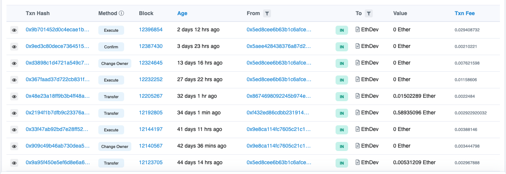
EF’s contract page on Etherscan.
Dune Analytics
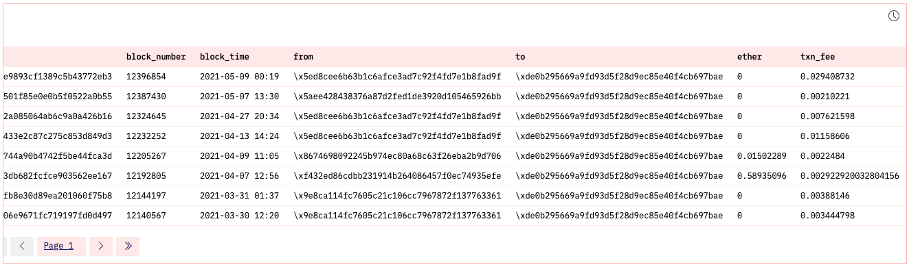
You can find dashboard here. Click on the table to see the query (also see above).
Breaking_Down_Transactions
A submitted transaction includes several pieces of information including ( source):
- Recipient: The receiving address (queried as “to”)
- Signature: While a sender’s private keys signs a transaction, what we can query with SQL is a sender’s public address (“from”).
- Value: This is the amount of ETH transferred (see
ethercolumn). - Data: This is arbitrary data that’s been hashed (see
datacolumn) - gasLimit: The maximum amount of gas, or the cost of computation, that can be consumed by a transaction (see
gas_limit). - gasPrice: The fee the sender pays to sign a transaction to the blockchain. Gas is denominated in Gwei which is 0.000000001 ETH (nine decimal places).
We can query these specific pieces of information for transactions to the Ethereum Foundation public address:
SELECT
"to",
"from",
value / 1e18 AS ether,
data,
gas_limit,
gas_price / 1e9 AS gas_price_gwei,
gas_used,
ROUND(((gas_used / gas_limit) * 100),2) AS gas_used_pct
FROM ethereum."transactions"
WHERE "to" = '\xde0B295669a9FD93d5F28D9Ec85E40f4cb697BAe'
ORDER BY block_time DESC
Blocks
Each transaction will change the state of the Ethereum virtual machine ( EVM) ( source). Transactions are broadcasted to the network to be verified and included in a block. Each transaction is associated with a block number. To see the data, we could query a specific block number: 12396854 (the most recent block among Ethereum Foundation transactions as of this writing, 11/5/21).
Moreover, when we query the next two blocks, we can see that each block contains the hash of the previous block (i.e., parent hash), illustrating how the blockchain is formed.
Each block contains a reference to it parent block. This is shown below between the hash and parent_hash columns (
source):
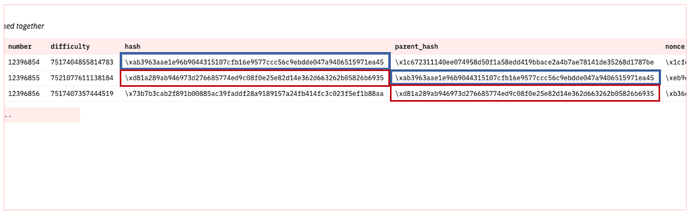
Here is the query on Dune Analytics:
SELECT
time,
number,
difficulty,
hash,
parent_hash,
nonce
FROM ethereum."blocks"
WHERE "number" = 12396854 OR "number" = 12396855 OR "number" = 12396856
LIMIT 10
We can examine a block by querying time, block number, difficulty, hash, parent hash, and nonce.
The only thing this query does not cover is list of transaction which requires a separate query below and state root. A full or archival node will store all transactions and state transitions, allowing for clients to query the state of the chain at any time. Because this requires large storage space, we can separate chain data from state data:
- Chain data (list of blocks, transactions)
- State data (result of each transaction’s state transition)
State root falls in the latter and is implicit data (not stored on-chain), while chain data is explicit and stored on the chain itself ( source).
For this tutorial, we’ll be focusing on on-chain data that can be queried with SQL via Dune Analytics.
As stated above, each block contains a list of transactions, we can query this by filtering for a specific block. We’ll try the most recent block, 12396854:
SELECT * FROM ethereum."transactions"
WHERE block_number = 12396854
ORDER BY block_time DESC`
Here’s the SQL output on Dune:
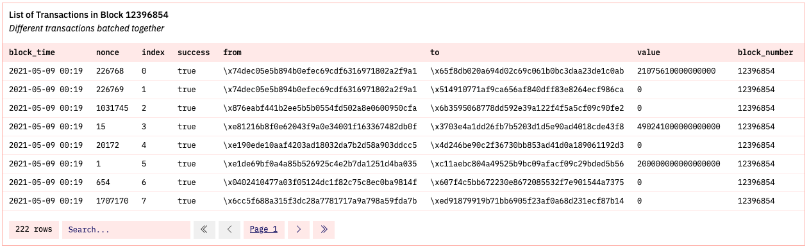
This single block being added to the chain changes the state of the Ethereum virtual machine ( EVM). Dozens sometimes, hundreds of transactions are verified at once. In this specific case, 222 transactions were included.
To see how many were actually successful, we would add another filter to count successful transactions:
WITH temp_table AS (
SELECT * FROM ethereum."transactions"
WHERE block_number = 12396854 AND success = true
ORDER BY block_time DESC
)
SELECT
COUNT(success) AS num_successful_txn
FROM temp_table
For block 12396854, out of 222 total transactions, 204 were successfully verified:
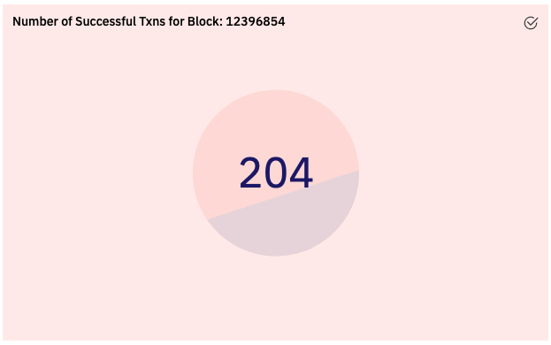
Transactions requests occur dozens of times per second, but blocks are committed approximately once every 15 seconds ( source).
To see that there is one block produced approximately every 15 seconds, we could take the number of seconds in a day (86400) divided by 15 to get an estimate average number of blocks per day (~ 5760).
The chart for Ethereum blocks produced per day (2016 - present) is:
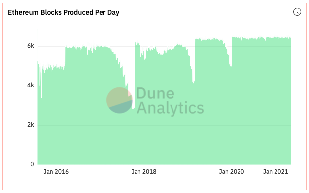
The average number of blocks produced daily over this time period is ~5,874:
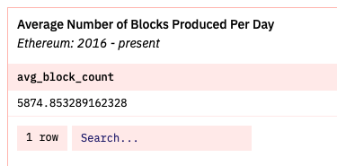
The queries are:
# query to visualize number of blocks produced daily since 2016
SELECT
DATE_TRUNC('day', time) AS dt,
COUNT(*) AS block_count
FROM ethereum."blocks"
GROUP BY dt
OFFSET 1
# average number of blocks produced per day
WITH temp_table AS (
SELECT
DATE_TRUNC('day', time) AS dt,
COUNT(*) AS block_count
FROM ethereum."blocks"
GROUP BY dt
OFFSET 1
)
SELECT
AVG(block_count) AS avg_block_count
FROM temp_table
The average number of blocks produced per day since 2016 is slightly above that number at 5,874. Alternatively, dividing 86400 seconds by 5874 average blocks comes out to 14.7 seconds or approximately one block every 15 seconds.
Gas
Blocks are bounded in size. Each block has a gas limit which is collectively set by miners and the network to prevent arbitrarily large block size to be less of a strain on full node in terms of disk space and speed requirements ( source).
One way to conceptualize block gas limit is to think of it as the supply of available block space in which to batch transactions. The block gas limit can be queried and visualized from 2016 to present day:
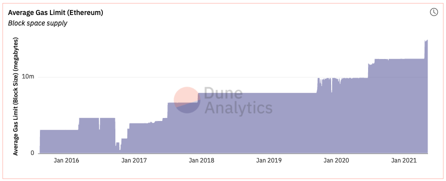
SELECT
DATE_TRUNC('day', time) AS dt,
AVG(gas_limit) AS avg_block_gas_limit
FROM ethereum."blocks"
GROUP BY dt
OFFSET 1
Then there is the actual gas used daily to pay for computing done on the Ethereum chain (i.e., sending transaction, calling a smart contract, minting an NFT). This is the demand for available Ethereum block space:
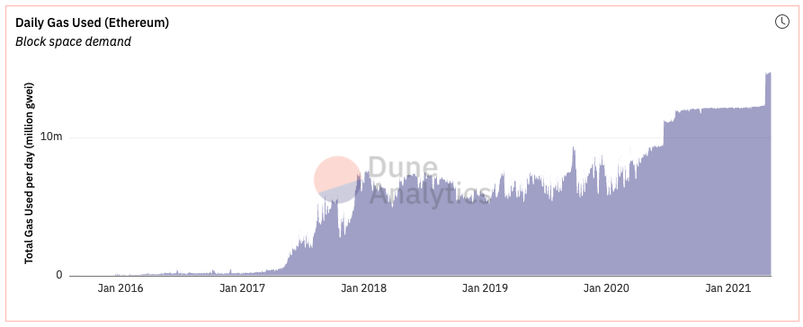
SELECT
DATE_TRUNC('day', time) AS dt,
AVG(gas_used) AS avg_block_gas_used
FROM ethereum."blocks"
GROUP BY dt
OFFSET 1
We can also juxtapose these two charts together to see how demand and supply line up:
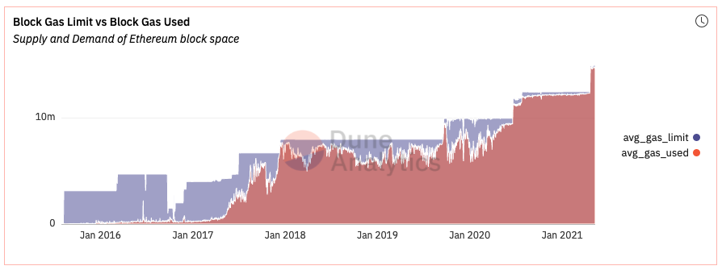
Therefore we can understand gas prices as a function of demand for Ethereum block space, given available supply.
Finally, we may want to query average daily gas prices for the Ethereum chain, however, doing so result in an especially long query time, so we’ll filter our query to the average amount of gas paid per transaction by the Ethereum Foundation.
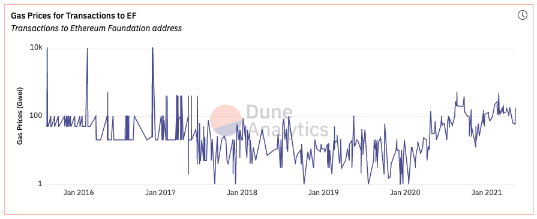
We can see gas prices paid in transaction to the Ethereum Foundation address over the years. Here is the query:
SELECT
block_time,
gas_price / 1e9 AS gas_price_gwei,
value / 1e18 AS eth_sent
FROM ethereum."transactions"
WHERE "to" = '\xde0B295669a9FD93d5F28D9Ec85E40f4cb697BAe'
ORDER BY block_time DESC
Summary
With this tutorial, we understand foundational Ethereum concepts and how the Ethereum blockchain works by querying and getting a feel for on-chain data.
The dashboard that holds all code used in this tutorial can be found here.
For more use of data to explore web3 find me on Twitter.
Paul Apivat
data in web3
My interests include data science, machine learning and R/Python programming.